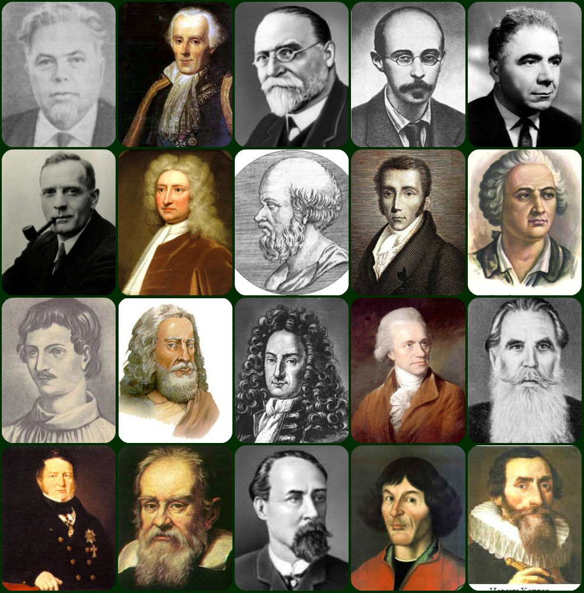
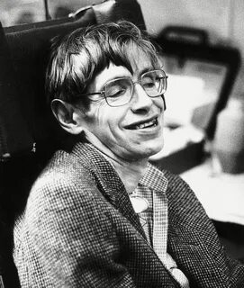
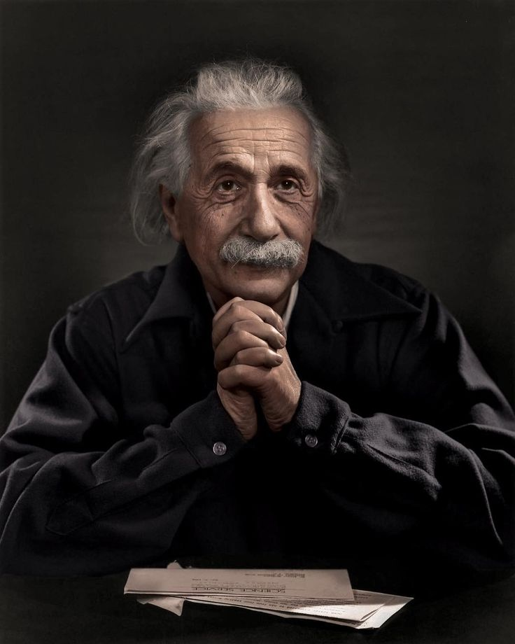
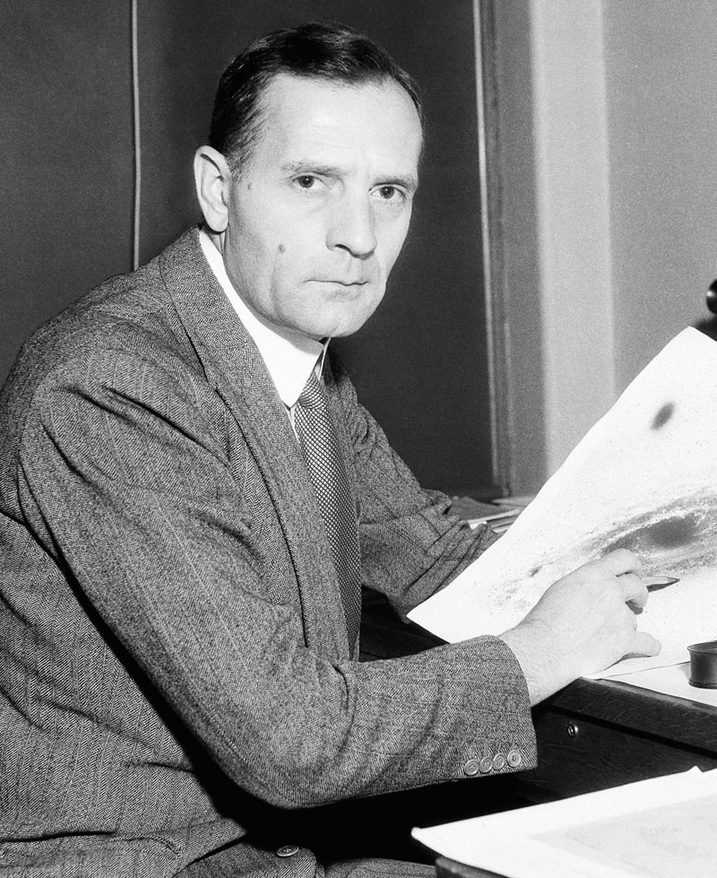
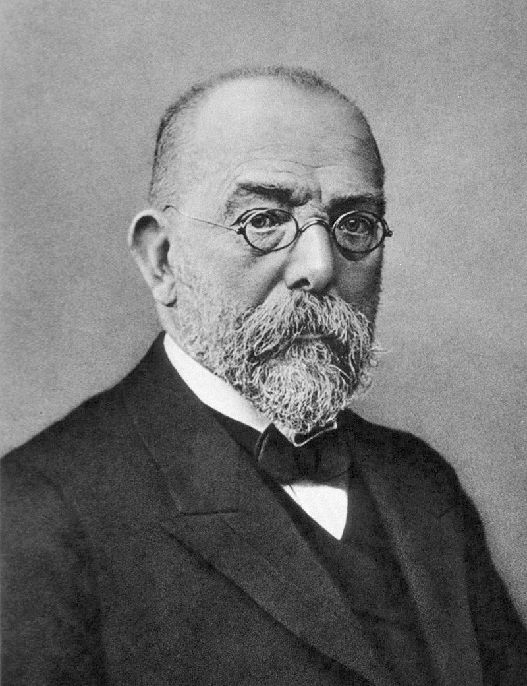
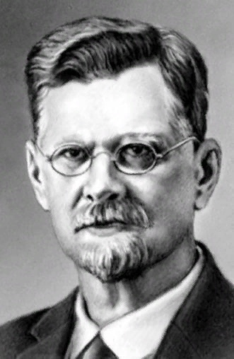
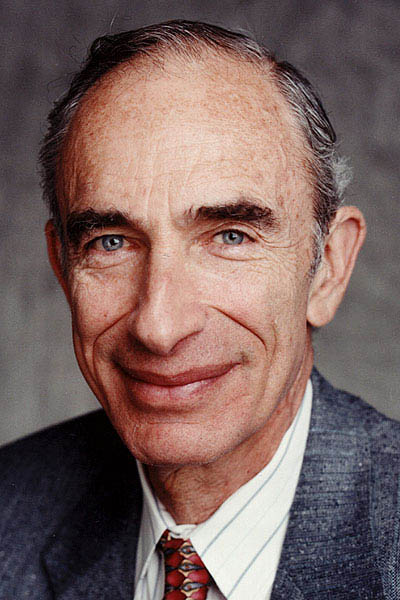

|  |
| Стивен Хокинг | |
|
Стивен Хокинг Английский физик-теоретик, космолог и астрофизик, писатель, директор по научной работе Центра теоретической космологии Кембриджского университета. Автор ряда научных трудов, в том числе совместной с Роджером Пенроузом работы по теоремам о гравитационной сингулярности в рамках общей теории относительности и теоретическому предсказанию выделения чёрными дырами излучения, часто именуемого излучением Хокинга. Хокинг первым изложил космологическую теорию, в которой были объединены представления общей теории относительности и квантовой механики. Активно поддерживал многомировую интерпретацию квантовой механики |  |
| Альберт Эйнштейн | |
|  |
Альберт Эйнштейн Физик-теоретик, один из основателей современной теоретической физики, лауреат Нобелевской премии по физике 1921 года, общественный деятель-гуманист. Жил в Германии, откуда с приходом к власти нацистов был вынужден эмигрировать и был лишён гражданства; Швейцарии, и с 1933 года до конца жизни - в США. В 1916 году ученый создал общую теорию относительности. Она служила обобщением специальной теории и ньютоновского закона всемирного тяготения. При этом физик описал гравитацию как геометрические свойства времени и пространства. |
| Эдвин Хаббл | |
|
Один из наиболее влиятельных астрономов и космологов в XX веке, внесший решающий вклад в понимание структуры космоса. В 1914-1917 годах работал в Йеркской обсерватории, с 1919 года - в обсерватории Маунт-Вилсон. Член Национальной академии наук в Вашингтоне с 1927 года Проработав около года в качестве преподавателя, Эдвин Хаббл снова занялся астрономией в Йеркской Обсерватории, где вскоре удостоился докторской степени. Он умер 28 сентября 1953 года в возрасте 63 лет. Его смерть наступила в результате церебрального тромбофлебита (случайного тромба в мозге). Согласно его воли, он был похоронен без каких-либо церемониальных процессий и в никому неизвестном месте. |
 |
| Роберт Кох | |
|  |
Немецкий врач, микробиолог и гигиенист. Коху удалось в 1876 году выделить и культивировать вне организма возбудителя сибирской язвы и впервые подробно описать его цикл жизни и роль в развитии заболевания. В 1882 году он открыл возбудителя туберкулёза, а затем создал псевдовакцину «Туберкулин». Его исследования привели к созданию постулатов Коха, серии из четырех обобщенных принципов, связывающих определенные микроорганизмы с конкретными заболеваниями, эти постулаты оказали влияние на последующие эпидемиологические принципы, такие как критерии Брэдфорда Хилла. За исследования в 1905 году награждён Нобелевской премией по физиологии и медицине |
| Сергей Четвериков | |
|
Русский и советский биолог, генетик-эволюционист, сделавший первые шаги в направлении синтеза менделевской генетики и эволюционной теории Чарльза Дарвина. Он раньше других учёных организовал экспериментальное изучение наследственных свойств у естественных популяций животных. В истории советской генетики Сергей Сергеевич Четвериков - одна из самых значительных и вместе с тем трагичных фигур. Талантливейший ученый и замечательный педагог, он почти сразу после того, как от энтомологии переключился на занятия генетикой, заложил основу одного из важнейших разделов этой науки.Четвериков Сергей Сергеевич, российский биолог, экспериментальным путём изучал наследование признаков животными в естественной природе и обосновал синтетическую теорию эволюции. |
 |
| Пол Эрлих | |
|  |
Американский биолог. Доктор, профессор Стэнфордского университета, где работает с 1959 года, член Национальной АН США и Американского философского общества, иностранный член Лондонского королевского общества немецкий врач и бактериолог, один из создателей иммунологии и основатель химиотерапии. В 1908 получил Нобелевскую премию по физиологии и медицине за работы по иммунологии (совместно с И.И.Мечниковым).Эрлих проработал врачом с 1878 по 1887 год, потом был заведующим отделением в берлинской клинике. Но его не прельщало врачевание, с юности он увлекался окраской клеток крови. Бактериология и микробиология влекли начинающего ученого. |
| *Используемые материалы: |
| Нобелевская премия |
| Теория относительности | Излучение Хокинга |